Yuklanmoqda...
Proekt va Produkt
boshqaruvi
TRENING STRUKTURASI:
- Buyurtmachidan taqdimot
- Ishtirokchilar bilan uchrashish. Treningdan maqsad va umidlar
- Mahsulot boshqaruviga kirish. Mahsulot menejeri kim?
- Jarayon va loyiha va mahsulot boshqaruvi
- Yangi mahsulotni ishlab chiqishda mahsulot yondashuvi. Mahsulot menejerining roli qanday o'zgarishi mumkin
- Yangi mahsulotni ishlab chiqish va ishlab chiqishning hayot aylanishi.
Davomiyligi: 80 min
Kofebreyk
Davomiyligi: 20 min
- Mahsulot yaratish g'oyalari qayerdan keladi? Xatolar va eng yaxshi amaliyotlar.
- Bozor va raqobatchilarni tahlil qilish. Bizning raqobatchilarimiz kimlar?
- Suhbatni qanday o'tkazish kerak. Yaxshi va yomon savollar. Amaliyot.
- Foydalanuvchi portreti. Amaliyot.
- Mahsulot foydalanuvchilarining ehtiyojlari va og'riqli nuqtalari. Amaliyot.
- Tegishli tomonlar. Mijoz va foydalanuvchi.
Davomiyligi: 80 min
Tushlik uchun tanafus
Davomiyligi: 60 min
Sessiya 2:
- Keyingi ish uchun mahsulotlarni tanlash.
- Bizning mahsulotimiz raqobatchilardan qanday farq qiladi? Mahsulot funksionallik jadvali (xususiyatlar jadvali). Amaliyot.
- Yangi mahsulotni yaratish bo'yicha loyihani boshlash. Maqsad, maqsadlar va muvaffaqiyat ko'rsatkichlari.
Davomiyligi: 80 min
Kofebreyk
Davomiyligi: 20 min
- Mahsulot yo'l xaritasi. Bu nima va uni qanday yaratish kerak. Amaliyot.
- Yangi mahsulotni yaratish jarayoni.
- Yangi mahsulotni yaratish uchun Agile va klassik loyihalarni boshqarish amaliyoti. MVP nima.
- Mahsulot prototipi. Maket va eskiz.
- Amaliyot (misol sifatida Scrum dan foydalanish)
- Treningning birinchi kuni natijalarini sarhisob qilish.
Davomiyligi: 80 min
Sessiya 3:
- Yangi/ishlab chiqarish mahsulotini yaratish uchun loyiha rejasini tuzish. Iterativ yondashuv. Orqaga tushgan vazifalarni ustuvorlashtirish uchun vositalar.
- Rolling to'lqin usuli bilan rejalashtirish.
- Loyiha rejasining to'liqligini tekshirish.
Davomiyligi: 80 min
Kofebreyk
Davomiyligi: 20 min
- Loyihaning davomiyligini (shartlarini) rejalashtirish. Amaliyot.
- Loyiha vazifalarini bajarish muddatini baholash xususiyatlari.
- Mahsulotni yaratish/ishlab chiqish uchun byudjetni rejalashtirish.
- Belgilangan muddatlardagi kechikishlar loyihaning muvaffaqiyatiga qanday ta'sir qiladi.
Длительность: 80 min
Tushlik uchun tanafus
Davomiyligi: 60 min
Sessiya 4:
- Yangi mahsulotni yaratish loyihasining sifatini boshqarish. Loyihaning muhim bosqichlarini boshqarish. Amaliyot.
- Natijani qabul qilish mezonlari.
Davomiyligi: 80 min
Kofebreyk
Davomiyligi: 20 min
- Loyiha jamoasida mas'uliyatni taqsimlash. RACI matritsasi.
- Mahsulot va loyiha menejeri o'rtasidagi o'zaro ta'sirning xususiyatlari.
- Loyiha aloqa boshqaruvi.
- Loyiha jamoasi bilan uchrashuvlar turlari.
Davomiyligi: 80 min
Sessiya 5:
- Yangi mahsulotni yaratish va ishlab chiqishda xavflarni boshqarish. Xatarlarni aniqlash va minimallashtirish. Amaliyot.
- Mahsulotni (xususiyatni) yaratishning xavf va murakkabligi o'rtasidagi bog'liqlik..
Davomiyligi: 80 min
Kofebreyk
Davomiyligi: 20 min
- Yangi (versiya) mahsulotning chiqarilishi. Ishga tushirish paytida mahsulot menejerining roli.
- Yangi mahsulotni yaratish va ishlab chiqish jarayonini boshqarish uchun ko'rsatkichlar (muvaffaqiyatni bashorat qilishdan natijalarni qayd etishgacha)
- Yangi mahsulotni yaratish va ishlab chiqish jarayonida manfaatdor tomonlarni boshqarish.
Davomiyligi: 80 min
Tushlik uchun tanafus
Davomiyligi: 60 min
Sessiya 6:
- Mahsulot ishlab chiqish.
- DevOps nima. DevOps siklida mahsulot menejerining roli qanday.
- Loyihani ishlab chiqish g'oyalari qayerdan keladi? Foydalanuvchi ehtiyojlarini aniqlash.
- Yangi g'oyalarga qanday ustuvorlik berish kerak.
Davomiyligi: 80 min
Kofebreyk
Davomiyligi: 20 min
- G'oyalarni gipotezalarga aylantirish va ularni sinab ko'rish. Amaliyot.
- Trening davomida olingan ma'lumotlarni tizimlashtirish.
- Ishtirokchilarning savollariga javoblar.
Davomiyligi: 80 min
Kontaktlar
+998 94 190 35 33
Get In Touch
Ziyolilar 9, Mirzo Ulugbek distrikt, Tashkent, Uzbekistan
+998 94 190 35 33
 

Наши ментора

Алексей Громыко
- Project Manager Professional (PMP).- Сертифицированый провессионал в управлении
бизнес-процессами (СВРР, abpmp.org).
- Президент Ассоциации профессионалов в области управления бизнес-процессами в Украине.